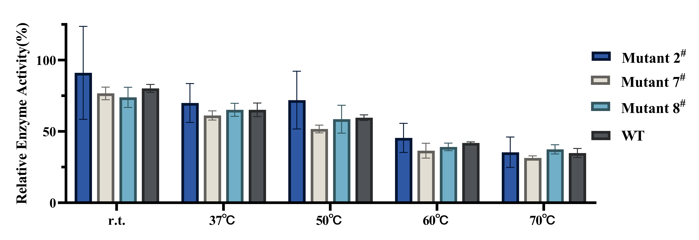
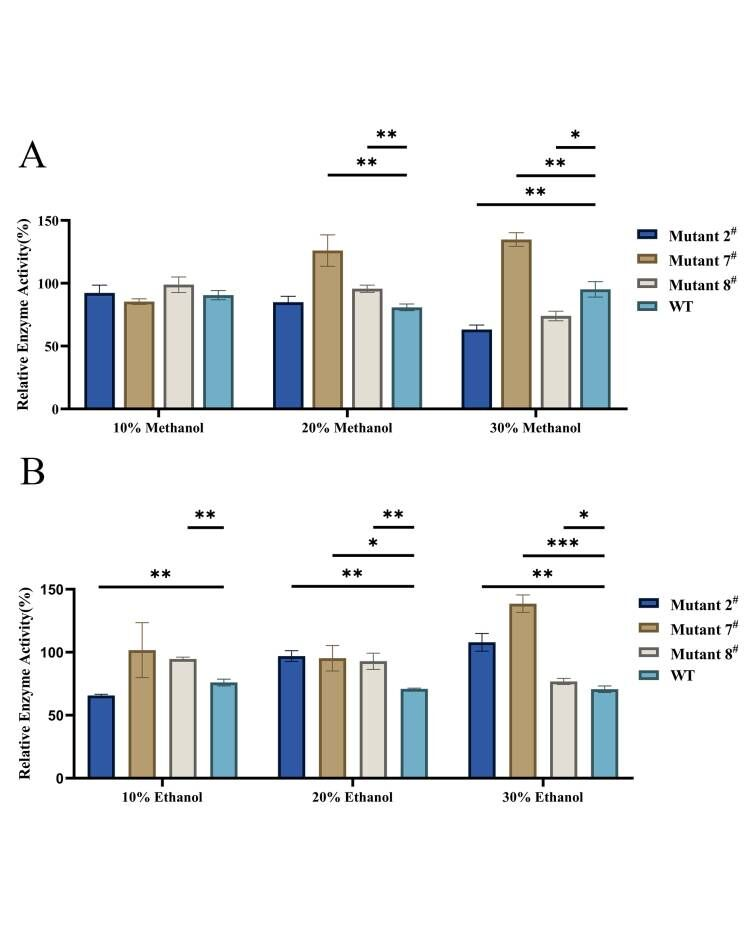

After fermentation of the aforementioned 4 mutants and wtMnP, the respective culture media containing crude enzymes were centrifuged at 15,000 rpm for 30 minutes twice to acquire supernatants, which were used in the following three enzyme activity and stability assays with wtMnP as control group.
It is necessary to note that the results demonstrated below have omitted the data of mutant 1# under different treatment conditions, due to the abnormally low enzyme activity of its supernatant, indicating occurrence of aberrant experimental conditions that we were unable to rectify due to a limit of time, or the internal loss of enzyme activity or stability that can be attributed to hazardous mutation. Therefore, only the activity data of mutant 2#, 7#, 8# were provided.
As shown in the Fig. 1, all the mutants and wtMnP shared the same trend of decrease with the increase of incubating temperature. Only mutant 2# seemed to exhibit a higher but insignificant improvement in thermal stability compared to wtMnP.
Fig. 1 Effect of temperature on the stability of mutant 2#, 7#, 8# and wtMnP. The initial MnP activity before incubation was set as 100%. WT refers to wtMnP without any mutantion.
As shown in Fig. 2, compared to wtMnP, each mutant exhibited poorer stability after incubation at pH 5 to 7 for 12 hours. However, the stability of mutant 2# and 8# at pH 3 were significantly higher than that of wtMnP. The activity of mutant 8# at pH 3 remained 89.5% of its original activity before incubation, which was 46.5% higher than that of wtMnP. In the case of mutant 7#, it precipitated after 12 h incubation at pH 3, which may result in low residual MnP activity of 14.8%.
Fig. 2 Effect of pH on the stability of mutant mutant 2#, 7#, 8# and wtMnP.
The initial MnP activity before incubation was set as 100%. WT refers to wtMnP without any mutantion.
As shown in Fig. 3A, methanol had little effect on the MnP activity of each mutant as well as wtMnP under concentrations of 10% after 12 h incubation, which nearly remained 100% activity compared to the control. Besides, when the methanol concentration rose up to 30%, the mutant 7# showed an outstanding activity which reached up to 134.8%, while the wtMnP only remained 95.1% enzyme activity.
As for the effect of ethanol shown in Fig. 3B, the mutant 7# still possessed a remarkable stability, especially in the 30% ethanol which evidently surpassing 100%. Both the mutant 2# and 7# showed an increasing stability as the concentration of organic solvent cumulating from 10% to 30%, while the wtMnP leveled off at a relatively low degree.
Fig. 3 Effect of different concentrations of different organic solvents on the stability of mutant 2#, 7#, 8# and wtMnP. The MnP activity without adding any organic solvent was set to 100% as the control. A: The effect of different concentrations of methanol on MnP activity. B: The effect of different concentrations of ethanol on MnP activity. WT refers to wtMnP without any mutation.
As a result, mutant 8# showed a significant activity improvement under low pH condition, while mutant 7#'s organic solvent stability was remarkably improved.